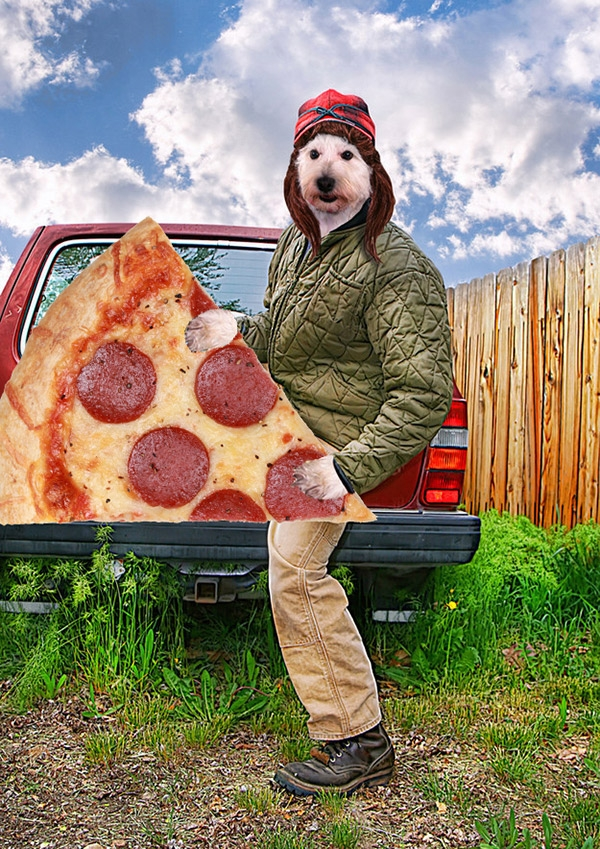

I'm High Priest Lotondo Chingles
Hello, Charms, and Questolovelaces! I'm happy to meet you!
I am committed to letting you know the truth of truest within the the extra programs which we put forth in this pursuit of all things amzing, fun and hip. We like to smile. We like to dance, and we like to have prayer - while eating the bread of life for the 4th night of Chunderduffen.I have never told a lie and I am not wearing a masking, this is my legitimate face.
High Elders

Humanoid Pizza Dog #672
Co-Founder, CEO
I am a Seattle based high elder focusing on delivering pizza to other Humanod Pizza Dogs. I like human things like English, Monopoly, and Tatter-Tots. Good Luck!
[REDACTED]
[REDACTED]
[REDACTED]

Pancake Face Steve
Principal Principal, Lizard Boymen
Pancakes. Pancakes. Pancakes.